AI が構成図を描き、人が 1 か所だけ直す。
その直しが、次の生成で壊れません。
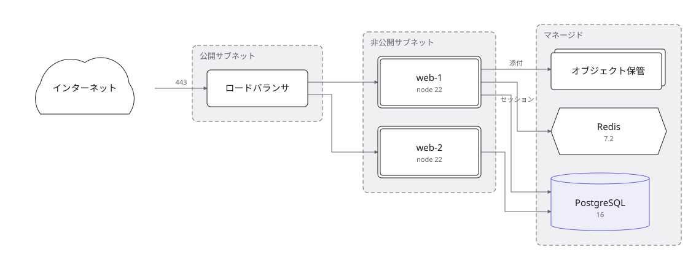
構成が変わった → 図を直すのが面倒 → 直さない → 図が嘘になる → 誰も図を見なくなる。
既存の作図ソフトは「1 枚目を描く道具」として完成しています。そこを競っても勝ち目はありません。 zumen が向き合うのは、白紙から描く面倒ではなく、更新されないまま腐ることです。
サーバやネットワークだけではありません。
工場のライン、病院の外来、住宅の電気と給排水、間取り、躯体の伏図、配管の系統、受変電、
避難経路、厨房の衛生区域、店舗の売場、展示会の会場、組織図、テーブルの関係、稟議 ——
「何がどこへ繋がるか」「どの順で流れるか」「何がどこにあるか」を表す図なら、
同じ書き方で描けます。
下はすべて、同じ 11 語の語彙で書いたものです。業界ごとの図形は 1 つも足していません。
専門性は形ではなく符号（C1 G1 2"-CS-101
LBS-1）で表されているからです。
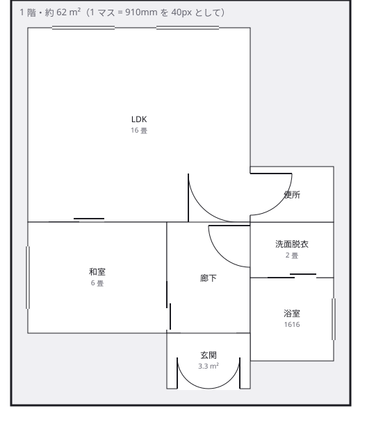
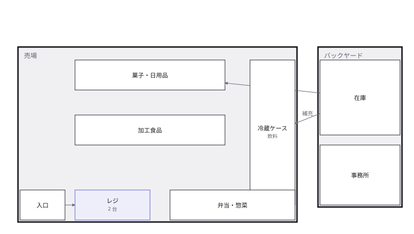
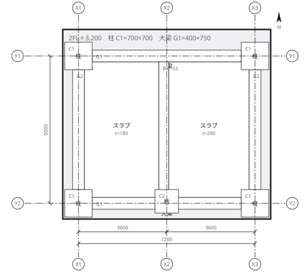
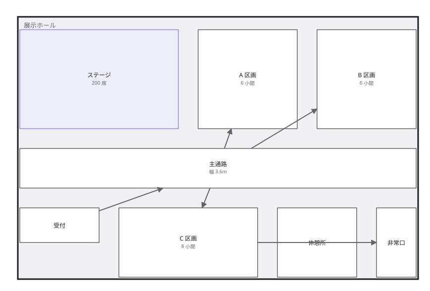
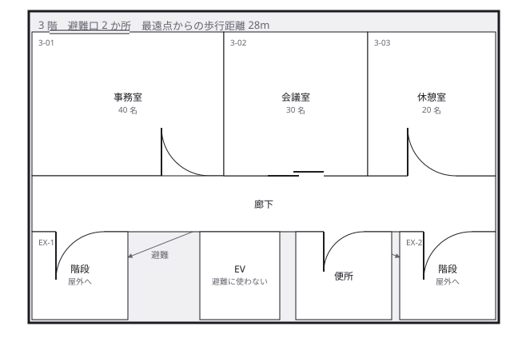
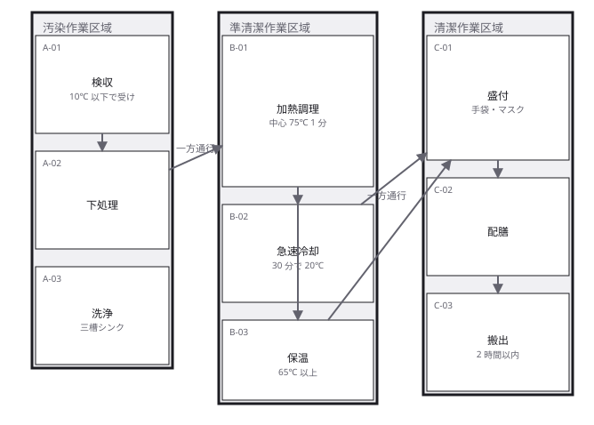
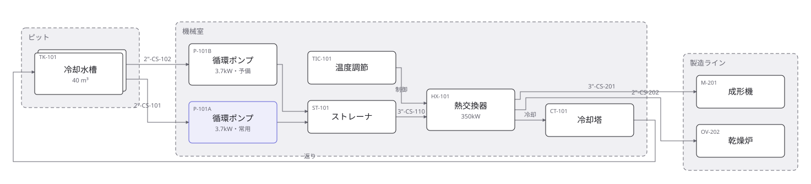
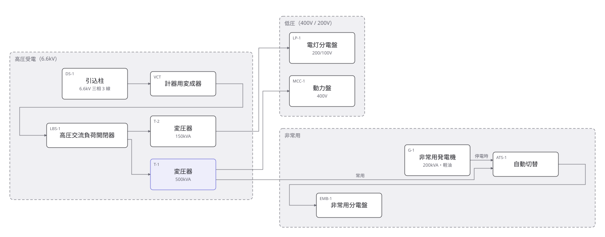
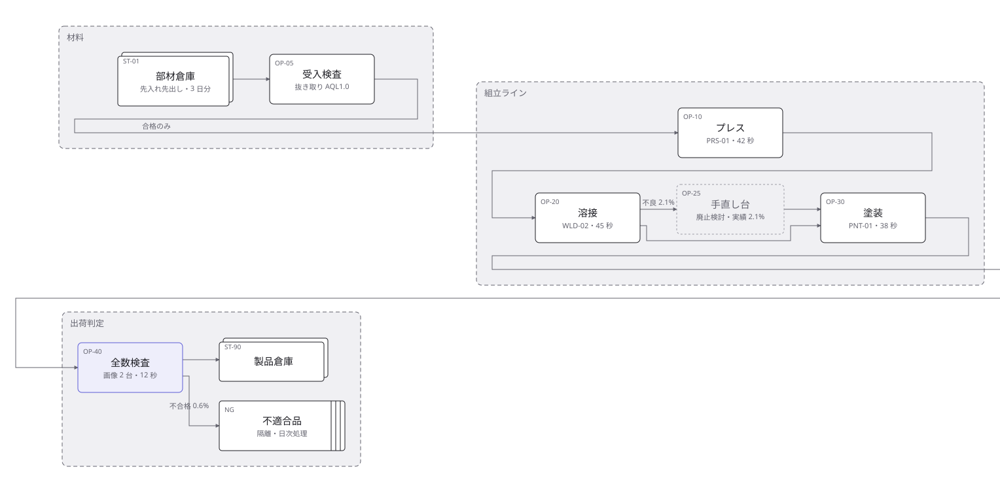
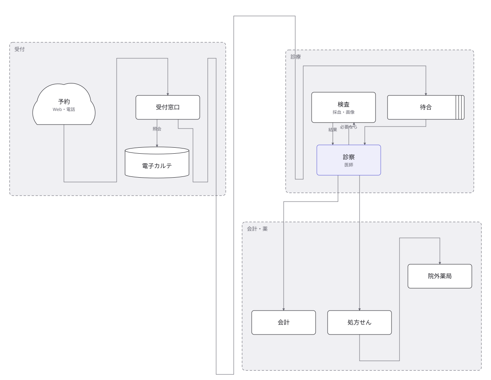
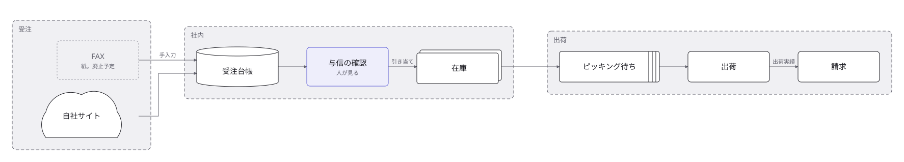
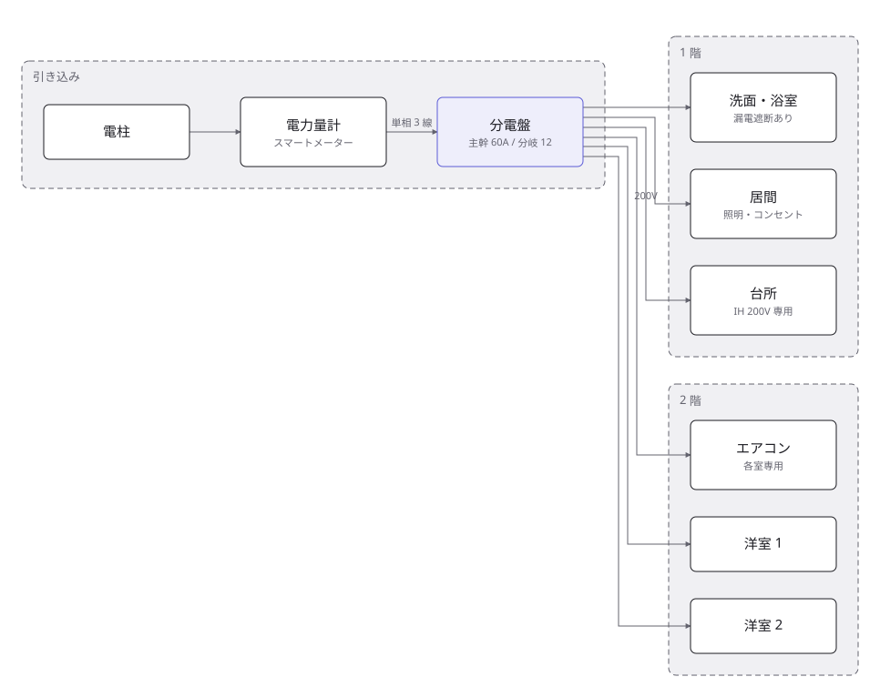
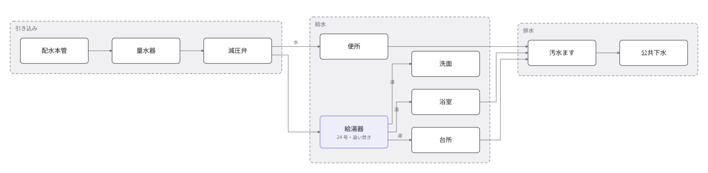
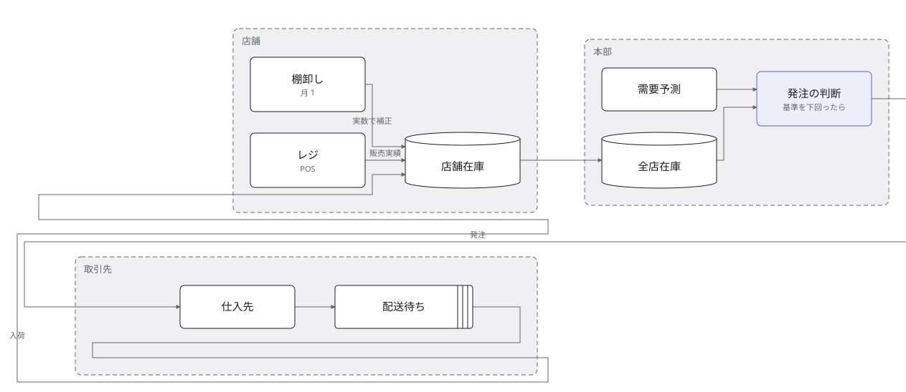
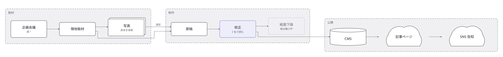
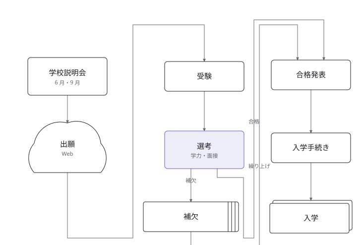
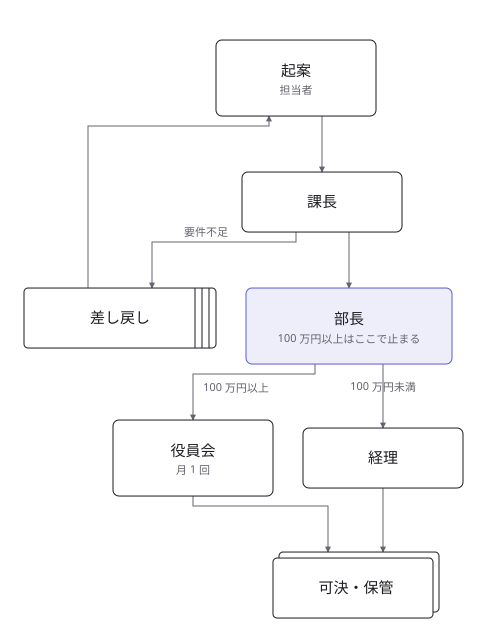
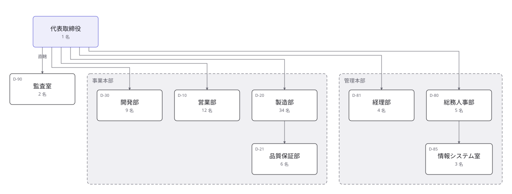
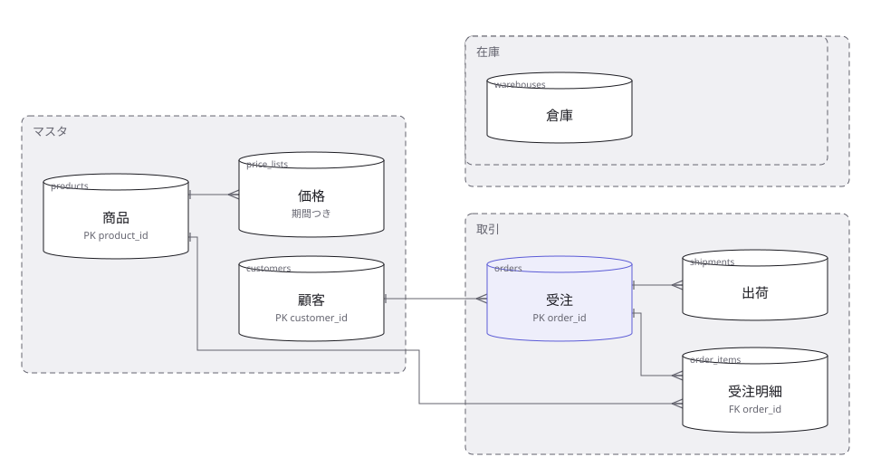
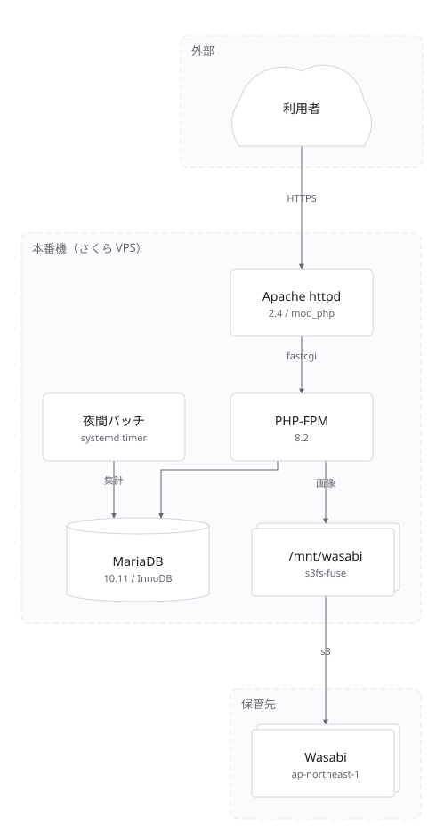
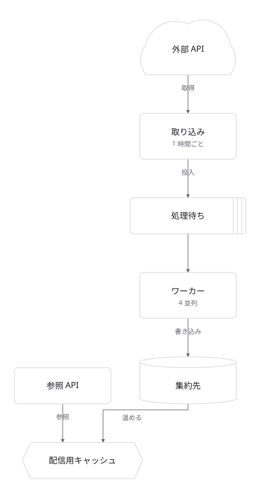
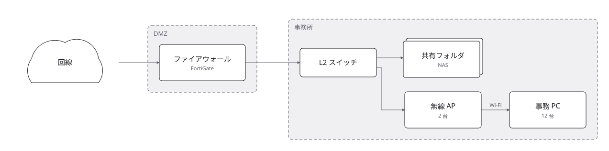
4 枚とも、下のような文章から そのまま出たものです。手で位置を直してはいません。
交差 0・箱の重なり 0・消えたラベル 0。
描いてある構成は例のために組んだもので、実在のものではありません。
正本は examples/gallery/
に入っているので、同じものを手元で出せます。
version: 1
title: オンプレのサーバ構成
nodes:
- id: httpd
type: server
label: Apache httpd
technology: 2.4 / mod_php
- id: db
type: database
label: MariaDB
edges:
- from: httpd
to: db
Git で差分が読めます。誰が何を足したか、レビューで分かります。
type は形になるので、白黒で印刷しても、縮小しても見分けが付きます
── 円柱はデータベース、六角形はキャッシュ、雲は外の世界。
人の手直しは正本の pins にしか書かれず、AI はそこを書けません。
道具の側で閉じてあるので、規約や注意書きに頼りません。
本物の AI で 10 回試して、10 回とも手直しは消えませんでした。
{ "mcpServers": { "zumen": {
"command": "node",
"args": ["<zumen の場所>/src/mcp.ts"] } } }
MCP の口が 9 つ。サーバ構成を把握しているエージェントに、直接描かせられます。
描いたあと zumen_inspect を叩けば、線の交差・箱の重なり・
置けずに消えたラベル・投影して読める大きさか・
人がまだ見ていないかが返ります。
開けていない口もあります ── 競合の決着、pins の書き換え、
「見た」の印。開けた瞬間、AI が自分の絵を自分で承認できてしまうからです。
Rust があれば pnpm app でそのまま立ちます。
MCP サーバだけなら Node だけで動きます（殻は要りません）。